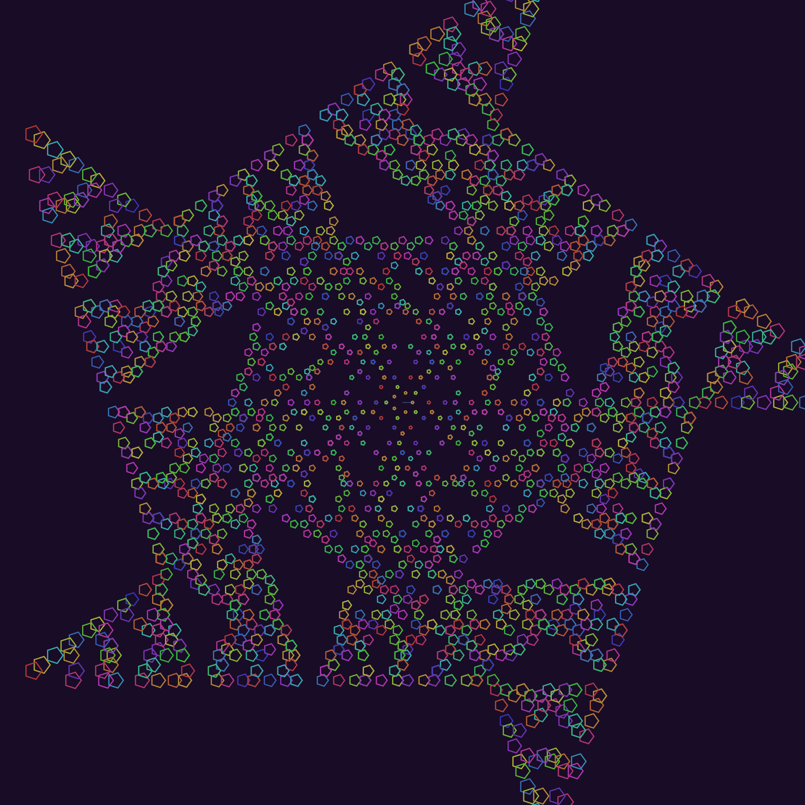

Lindenmayer.jl
This is a very simple package that draws LSystems.
Introduction
An LSystem, or Lindenmayer system, is a set of rules that can define recursive patterns.
L-systems were introduced and developed in 1968 by Aristid Lindenmayer, a Hungarian theoretical biologist and botanist at the University of Utrecht. Lindenmayer used L-systems to describe the behaviour of plant cells and to model the growth processes of plant development. L-systems have also been used to model the morphology of a variety of organisms and can be used to generate self-similar fractals such as iterated function systems.
In Lindenmayer.jl you can define an L-System like this:
sierpinski_triangle = LSystem(Dict(
"F" => "G+F+Gt",
"G" => "F-G-F"),
"G")(this one has two rules, and an initial state), and draw it like this:
drawLSystem(sierpinski_triangle, forward=30, turn=60, iterations=6)For example:
using Lindenmayer
sierpinski_triangle = LSystem(Dict(
"F" => "G+F+Gt",
"G" => "7F-G-F"),
"G")
drawLSystem(sierpinski_triangle,
forward = 10,
turn = 60,
iterations = 6,
startingx = -300,
startingy = -300,
filename = "assets/figures/sierpinski_triangle.svg",
showpreview = false)
In Lindenmayer.jl, an LSystem consists of:
Rules: a dictionary of transformation rules that replace a character with one or more characters
Initial state: the initial state for the system (also called "the Axiom")
State: the current evolved state (initially empty, added when the system is evaluated)
You define an L-System like this:
sierpinski_triangle = LSystem(Dict(
"F" => "G+F+G",
"G" => "F-G-F"),
"G")This LSystem has two rules. The first rule says replace "F" with "G+F+Gt" at every iteration. Rule 2 says replace "G" with "F-G-F" at every iteration. We start off with an initial state consisting of just a single "G".
So the system grows like this:
1: G
2: (F-G-F)
3: (G+F+G)-(F-G-F)-(G+F+G)
4: (F-G-F)+(G+F+G)+(F-G-F)-(G+F+G)-(F-G-F)-(G+F+G)-(F-G-F)+(G+F+G)+(F-G-F)
5: (G+F+G)-(F-G-F)-(G+F+G)+(F-G-F)+(G+F+G)+(F-G-F)+(G+F+G)-(F-G-F)-(G+F+G)-(F-G-F)+(G+F+G)+(F-G-F)-(G+F+G)-(F-G-F)-(G+F+G)-(F-G-F)+(G+F+G)+(F-G-F)-(G+F+G)-(F-G-F)-(G+F+G)+(F-G-F)+(G+F+G)+(F-G-F)+(G+F+G)-(F-G-F)-(G+F+G)
6: (F-G-F)+(G+F+G)+(F-G-F)-(G+F+G)-(F-G-F)-(G+F+G)-(F-G-F)+(G+F+G)+(F-G-F)+(G+F+G)-(F-G-F)-(G+F+G)+(F-G-F)+(G+F+G)+(F-G-F)+(G+F+G)-(F-G-F)-(G+F+G)+(F-G-F)+(G+F+G)+(F-G-F)-(G+F+G)-(F-G-F)-(G+F+G)-(F-G-F)+(G+F+G)+(F-G-F)-(G+F+G)-(F-G-F)-(G+F+G)+(F-G-F)+(G+F+G)+(F-G-F)+(G+F+G)-(F-G-F)-(G+F+G)-(F-G-F)+(G+F+G)+(F-G-F)-(G+F+G)-(F-G-F)-(G+F+G)-(F-G-F)+(G+F+G)+(F-G-F)-(G+F+G)-(F-G-F)-(G+F+G)+(F-G-F)+(G+F+G)+(F-G-F)+(G+F+G)-(F-G-F)-(G+F+G)-(F-G-F)+(G+F+G)+(F-G-F)-(G+F+G)-(F-G-F)-(G+F+G)-(F-G-F)+(G+F+G)+(F-G-F)+(G+F+G)-(F-G-F)-(G+F+G)+(F-G-F)+(G+F+G)+(F-G-F)+(G+F+G)-F-G-F-(G+F+G)+F-G-F+(G+F+G)+F-G-F-(G+F+G)-F-G-F-(G+F+G)-F-G-F+(G+F+G)+F-G-F... etc.and afer only a few iterations the state consists of thousands of instructions.
When the LSystem is drawn, the characters in the rule are interpreted as instructions or commands to move a Luxor.jl turtle. So, for example:
"F" and "G" both convert to "Luxor.Forward()"
"+" rotates clockwise
"-" rotates counterclockwise
"5" specifies a 5 pt thick line
"t" shifts the pen's hue color by 5°
and so on. The actual distance moved by "F" and "G" instructions, the angle of the turn, and other starting parameters, are specified when you evaluate the LSystem.
You can use any of the unused characters as placeholders or variables. For example, this Hilbert LSystem uses L and R, which don't do anything on their own - but they do insert plenty of "F", "+", and "-" commands.
hilbert_curve = LSystem(Dict(
"L" => "+RF-LFL-FR+",
"R" => "-LF+RFR+FL-"),
"3L") # 90°Drawing LSystems
To evaluate and draw the LSystem, use drawLSystem().
drawLSystem(LSystem(Dict("F" => "5F+F--F+Ftt"), "F"),
startingx = -400,
forward = 4,
turn = 80,
iterations = 6)Keyword options and defaults for drawLSystem are:
forward = 15,
turn = 45,
iterations = 10,
filename = "/tmp/lsystem.png",
width = 800,
height = 800,
startingpen = (0.3, 0.6, 0.8), # starting color RGB
startingx = 0,
startingy = 0,
startingorientation = 0,
backgroundcolor = colorant"black",
asteriskfunction = (t::Turtle) -> (),
showpreview = true)Rules
The following characters are recognized in LSystem rules.
| Character | Function |
|---|---|
| F | step Forward |
| G | same as F |
| B | step backwards |
| V | same as B |
| f | half a step forward |
| b | turn 180° and take half a step forward |
| U | lift the pen (stop drawing) |
| D | pen down (start drawing) |
| + | turn by angle (degrees!) |
| - | turn backwards by angle |
| r | turn randomly by 10° 15° 30° 45° or 60° |
| T | change the hue at random |
| t | shift the hue by 5° |
| c | randomize the saturation |
| O | choose a random opacity value |
| l | increase the step size by 1 |
| s | decrease the step size by 1 |
| 9 | set line width to 9 |
| 8 | set line width to 8 |
| 7 | set line width to 7 |
| 6 | set line width to 6 |
| 5 | set line width to 5 |
| 4 | set line width to 4 |
| 3 | set line width to 3 |
| 2 | set line width to 2 |
| 1 | set line width to 1 |
| n | set line width to 0.5 |
| o | draw a circle with radius step/4 |
| q | draw a square with side length step/4 |
| @ | turn 5° |
| & | turn -5° |
| [ | push the current state on the stack |
| ] | pop the current state off the stack |
| * | execute the supplied function |
Arbitrary functions
You can use one external function in an LSystem. Whenever you include the * character in a rule, a function passed to drawLSystem() using the keyword option asteriskfunction will be called. This function accesses the Luxor turtle that's currently busy drawing the LSystem.
In the following example, the asterisk function f(t::Turtle) passed to drawLSystem() is a bit disruptive. It changes the line width, sets the color, and then draws a group of rescaled pentagons at the turtle's current location and other rotationally symmetrical places. Then, it sets the opacity to 0. The turtle never realises this and never resets it (the t hue-shifting rule uses Luxor.sethue() which doesn't change the current opacity). So all the lines drawn by the turtle are completely transparent, leaving just the pentagons visible.
using Lindenmayer, Luxor, Colors
recursive = LSystem(Dict(
"F" => "G+F+G6t",
"G" => "F*-G-F"),
"G2")
f(t::Turtle) = begin
p = Point(t.xpos, t.ypos)
setline(3)
setopacity(1)
setcolor(HSB(rand(0:359), 0.7, 0.7))
for i in 0:4
@layer begin
rotate(i * deg2rad(72))
ngon(p, rescale(distance(p, O), 1, 1000, 3, 20), 5, 0, :stroke)
end
end
setopacity(0.0)
end
drawLSystem(recursive,
forward=25,
turn=72,
iterations= 7,
startingx = 0,
startingy = 0,
width=2000,
height=2000,
backgroundcolor = RGB(0.1, 0.05, 0.15),
filename="assets/figures/recursive.png",
asteriskfunction = f)
Debugging
To debug:
ENV["JULIA_DEBUG"] = LindenmayerLindenmayer.LSystem — TypeA Lindenmayer system is a set of rules that can define recursive patterns. In Lindenmayer.jl, an LSystem consists of:
Rules: a dictionary of transformation rules that replace a
character with one or more characters
Initial state: the initial state for the system (also
called "the Axiom")
State: the current evolved state (initially empty, added
when the system is evaluated)
You can define an L-System like this:
using Lindenmayer
koch = LSystem(Dict("F" => "F+F--F+F"), "F")Extended help
This says: there's just one rule; replace "F" with "F+F–F+F" for each iteration. And start off with an initial state consisting of just a single "F".
To draw the LSystem we use Luxor.jl's Turtle, which interprets the characters in the rule as instructions or commands. For example, "F" converts to "Luxor.Forward()". "+" rotates clockwise, "-" rotates counterclockwise, and so on.
drawLSystem(LSystem(Dict("F" => "5F+F--F+Ftt"), "F"),
startingx = -400,
forward = 4,
turn = 80,
iterations = 6)Keyword options for drawLSystem include:
forward=15,
turn=45,
iterations=6,
filename="/tmp/lsystem.pdf",
width=1000,
height=1000,
startingpen=(0.3, 0.6, 0.8), # starting color RGB
startingx=0,
startingy=0,
startingorientation=0,
showpreview=trueThe following characters are recognized in LSystem rules.
F - step Forward
G - same as F
B - step backwards
V - same as B
f - half a step forward
b - turn 180° and take half a step forward
U - lift the pen (stop drawing)
D - pen down (start drawing)
+ - turn by angle
- - turn backwards by angle
r - turn randomly by 10° 15° 30° 45° or 60°
T - change the hue at random
t - shift the hue by 5°
c - randomize the saturation
O - choose a random opacity value
l - increase the step size by 1
s - decrease the step size by 1
5 - set line width to 5
4 - set line width to 4
3 - set line width to 3
2 - set line width to 2
1 - set line width to 1
n - set line width to 0.5
o - draw a circle with radius step/4
q - draw a square with side length step/4
@ - turn 5°
& - turn -5°
[ - push the current state on the stack
] - pop the current state off the stack
* - execute the arbitrary passed as asteriskfunction() ```
Lindenmayer.drawLSystem — FunctiondrawLSystem(lsystem::LSystem ;
# optional settings:
forward=15,
turn=45,
iterations=10,
filename="lsystem.png",
width=800,
height=800,
startingpen=(0.3, 0.6, 0.8), # starting color RGB
startingx=0,
startingy=0,
startingorientation=0,
showpreview=true,
backgroundcolor = colorant"black",
asteriskfunction = (t::Luxor.Turtle) -> ())Draw a Lindenmayer system. lsystem is the definition of a L-System (rules followed by initial state).
For example:
newsystem = LSystem(Dict("F" => "AGCFCGAT", "G" => "CFAGAFC"), "F")You can change or add rules like this:
newsystem.rules["F"] = "OFO"You can vary the line width using Turtle commands "1" ... "9" to select the appropriate line width (in points), or "n" to choose a narrow 0.5.
Documentation built 2023-07-09T08:43:15.083 with Julia 1.9.2 on Linux